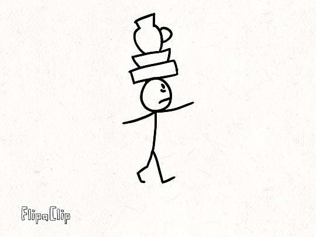
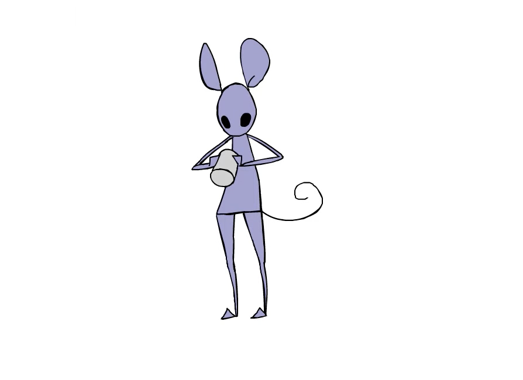

Secondary action
A secondary action is an external action complimenting the main action. This can happen when a person is doing something and its gesture and posture reveals how he’s doing that action, or when it's trying to do two or more things at the same time. Adding secondary action to a moving character can have more expression to any animation.

In this animation, we can see that the character is walking while trying to balance the objects he has on its head to avoid dropping them off. The character is doing both things at once, and its expression in the face tells it's nervous about slipping up. Walking is the primary action, while balancing and being nervous are the secondary movements.

Click on the image to see video. In this animation, we see the character is trying to get something out of the can; it is doing with force and its expression is angry becuase it is trying hard to get it out, even if the attempt backfires in the end. The character getting something out of the can and the way it's doing it fills the secondary action.